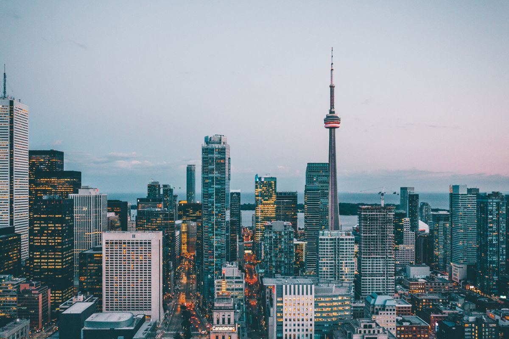

If you are finishing a program in Canada and planning to stay for work, pgwp eligibility 2026 is the one question that decides your whole next chapter. It is a checklist rather than a competition, and it is decided on documents rather than in interviews.
The post-graduation work permit is an open work permit that lets you work for almost any employer in Canada, in almost any occupation. It is granted strictly on fixed conditions rather than on your grades, your job offers, or the reputation of your college.
The rules behind that checklist are not new, and that is the most useful thing to know. Immigration, Refugees and Citizenship Canada rewrote the framework in late 2024, with changes landing in stages across September and November 2024. Because those rules are now built into Canadian processing systems, they govern unchanged every application filed in 2026.
Four of those changes decide most refused files. A higher language bar that splits degree graduates from college and certificate graduates. A field-of-study requirement that touches only non-degree graduates. A rule requiring at least half of your program to be completed in person inside Canada. And, from September 2026, a higher proof-of-funds figure for applicants living outside Canada.
If you are still choosing a school, read the whole guide before you pay a deposit. If you have already graduated, work through the checklist and count your 180 days carefully. Both versions of this page are written to be read in either order.
Applying to Canada from Pakistan? Start with our canada student visa from pakistan 2026 guide, then read the intake limits in canada intl study permit cap 2026 pal. Both directly affect which programs you can realistically enter, and therefore which PGWP routes stay open to you.

What Is the Post Graduation Work Permit?
A PGWP is an open work permit. Once it is issued, it is not tied to one employer, one job title, or one province. You can change employers, move into a different occupation, and relocate to another part of the country without asking permission.
That flexibility is the reason the permit is so valuable. A typical employer-sponsored work permit binds you to a single company. A PGWP does not, which means you can job search properly, take contract work, and build Canadian work experience on your own terms.
There is one hard limit you must understand before applying. You can only ever receive one post graduation work permit canada issues in your lifetime. If you let it expire without building the permanent residence profile you wanted, there is no second application.
Permit length ranges from 8 months up to 3 years. The duration is tied to the length of the program you completed, so a longer program produces a longer permit. Master’s graduates of programs lasting at least 8 months can receive up to 3 years regardless of the exact program length.
You do not need a job offer to qualify, and you do not need one to apply. The permit is assessed against your program, your attendance record, your language score, and your application date. Employers become relevant only after the permit is in your hands.
This is also the standard route into Canadian permanent residence for international graduates. Time on a PGWP can build the work experience used for Express Entry categories and for provincial nomination programs such as Alberta Express Entry and the Provincial Nominee Program.
The Government of Canada describes the permit in detail on its official page about the post-graduation work permit. Every figure in this guide is taken from that page or from the linked eligibility page, so you can check the source yourself.
For master’s students planning ahead, our guide to a canada work permit after masters covers the sequencing, including why applying early matters more than applying perfectly.
What a PGWP does not do
A PGWP does not give you permanent residence, and it does not turn into citizenship on its own. It is a temporary open work permit, issued for the length calculated from your program, and by the end of it you must have moved to another status or left the country.
It also does not cover the gap before it starts. Your study permit governs your work rights until the PGWP is issued, and working outside what that study permit allows can sink an otherwise perfect file.
If your aim is to stay permanently, the permit is one step in a longer sequence. Graduate from an eligible program, build work experience, then use Express Entry or a provincial nomination to convert that experience into a permanent residence application.
PGWP Eligibility 2026: General Requirements
PGWP eligibility requirements 2026 are not a points system. There is no score to reach and nothing to negotiate. Your application passes or fails against a checklist, and every line on that checklist has to be true on the same day you apply.
The post graduation work permit canada framework asks you to confirm all of the following:
- You completed a program of at least 8 months in length, or at least 900 hours in Quebec.
- The program was at a designated learning institution that is PGWP-eligible.
- You were a full-time student during every semester of the program, with part-time study allowed only in the final semester.
- You applied within 180 days of receiving written confirmation that you completed the program.
- You held a valid study permit at some point during those 180 days.
- You completed at least 50% of the program in person inside Canada, if you started on or after 1 September 2024.
- You meet the language requirement for your credential type.
- Your program meets the field-of-study requirement, if you are a non-degree graduate who falls under it.
The 8-month minimum and the 900-hour Quebec rule
The program must run for at least 8 months. Shorter programs simply do not qualify, and there is no exception for high grades, relevant internships, or a strong job offer. In Quebec, the equivalent threshold is 900 hours of study rather than a calendar duration.
What counts as a program is narrower than most applicants expect. A certificate shorter than 8 months, a short non-credit course, or a single exchange term will not meet the threshold. Confirm the published program length in writing before you rely on it.
Approved programs are listed on the government’s designated learning institution list. Filter that page for PGWP eligibility, because not every designated school offers eligible programs.
Full-time status in every semester
You had to study full time in every semester of the program. The single exception is the final semester, where part-time study is permitted. Reduced course loads, leave, and missed terms can quietly break this requirement.
If a school recorded you as part time for reasons you did not control, you can request a correction from the registrar before you file. A corrected record is far easier to fix than a refused permit, and the school holds the evidence you need.
The 180-day application window
You must apply within 180 days of the date you received written confirmation of completing the program. That letter or message is the trigger, not the graduation ceremony, and the clock runs from the moment the confirmation reaches you.
Missing this window ends PGWP eligibility requirements for that program permanently. There is no extension, no discretionary exception, and no second attempt, because the permit itself is available only once in a lifetime.
Completing at least 50% of your program in Canada
If you started your studies on or after 1 September 2024, at least 50% of the program must be completed in person inside Canada. This target applies to students whose studies included a study permit issued for a different program, exchange semesters abroad, or substantial online or distance coursework.
The rule was added to confirm that a Canadian study permit leads to genuine participation in Canadian education. Transferred credits, exemptions, and credits earned at an overseas partner school are where students most often fall short.
Holding a valid study permit during the 180 days
You must have held a valid study permit at some point during the 180-day window. Practically, this means you normally have to be in Canada on a valid study permit when your program ends, which is the situation for almost every graduating student.
The exception is the applicant who extends their study permit through the winter but loses status before the permit is issued. Restoration rules may apply if your status lapsed, and those rules are handled separately from the PGWP checklist itself.
Which document proves which requirement
Each line on the checklist is proved by a specific document, and assembling them early removes most of the friction from the application. Program length and completion come from your written confirmation of completion and your official transcript.
Full-time status is proved by the same transcript or by a registrar letter. Your study permit history is proved by your current permit and any past permits listed in the portal. The 50% in-person rule is proved by permit history and enrolment records for each term.
PGWP Eligibility 2026: Who Is Not Eligible?
Several groups consistently lose PGWP eligibility requirements 2026 on paper and cannot fix it after enrolment. The first is anyone whose program sits outside the approved list at an institution that is not PGWP-eligible. Verifying the program, not just the school, is the check that matters.
The second group is graduates of public-private partnership programs. Many college students enrolled in these before 2024, and most graduates of such programs are now ineligible unless they fall under specific IRCC exception dates. Because the exceptions are dated and narrow, this category must be checked case by case.
The third is students who never completed a qualifying program. A study permit expires, but it does not convert into a work permit on its own. Leaving Canada when your permit ends without a PGWP application on file means leaving Canada.
The fourth is anyone who has already used their single lifetime permit. Once issued, that offer is spent, and no later degree, diploma, or certificate can replace it through this route.
The fifth is a group that surprises people. A student admitted to a PGWP-eligible program who then switches into a non-eligible one, or who takes a leave and returns under different conditions, may no longer match the program on their study permit. Always file against the program actually listed on your permit.
Which set of rules governs you is decided by dates rather than by graduation year alone. The language requirement follows the date you apply for the PGWP, and the field-of-study requirement follows the date you applied for your study permit.
Students who applied for their study permit before 1 November 2024 are generally assessed under the earlier language rules. Anyone applying for a PGWP on or after that date is assessed under the 2024 language test described in this guide, with accepted tests and level requirements applied at the time of application.
PGWP Language Test Rules in 2026: Do I Need CLB 7 or CLB 5?
The language bar for PGWP applications made on or after 1 November 2024 depends on your credential, not on your school or your nationality. Degree graduates face a higher bar than college and certificate graduates, and the difference is large enough to change your test booking.
If you have seen the clb 7 clb 5 canada pgwp question asked repeatedly, the short answer is that the level is set by the type of award you completed. A bachelor’s, master’s or doctoral degree needs CLB 7 in English or NCLC 7 in French across all four abilities.
College, polytechnic, and other non-university programs, including certificates, diplomas, advanced diplomas, and graduate certificates, need CLB 5 in English or NCLC 5 in French. Flight school graduates are exempt from the language requirement entirely.
| Credential type | English level needed | French level needed | Approximate IELTS General |
|---|---|---|---|
| Bachelor’s, master’s or doctoral degree | CLB 7 in all four skills | NCLC 7 in all four skills | About 6.0 in each band |
| Certificate, diploma, advanced diploma, graduate certificate | CLB 5 in all four skills | NCLC 5 in all four skills | About 5.0 in each band |
| Flight school program | Exempt | Exempt | Not required |
Which language tests are accepted
For English, IRCC accepts the IELTS General Training, CELPIP-General, and the PTE Core. For French, it accepts the TEF Canada and the TCF Canada. No other test result is valid for a PGWP, and mixing tests across the four abilities is not permitted.
Results must be valid on the date you apply, not valid on the date you sit the test. A result that expires while your application is in processing can still create problems, so leave a buffer between your test date and your filing date.
Why your IELTS Academic score does not count
The single most common rejection reason is the test module. Academic IELTS and Academic PTE are designed for university admissions and are not accepted for a PGWP. If you booked the academic version for university entry, you need the general version as a separate test.
The same trap catches applicants who sit the test in the wrong order for their timeline. If you took the general test first and the academic test later, only the general result can support the PGWP application, and the academic score must not be submitted in its place.
The same applies to PTE. The academic PTE supports university admission decisions and is not accepted for a PGWP, while the PTE Core is. Candidates who search for clb 7 clb 5 canada pgwp requirements often find advice written for the academic version, which then cannot be used at all.
What CLB 7 means in IELTS terms
CLB 7 corresponds to roughly 6.0 in each band of the IELTS General. Candidates who plan for a CLB 7 outcome usually need to sit above that, because one band below target fails the requirement in that ability.
For non-degree programs targeting CLB 5, the equivalent is about 5.0 in each band. Many Pakistani candidates already hold scores at this level for their study permit, so re-testing is sometimes unnecessary, provided the test module was General and the result is still current.
Where you can take the test
Accepted tests can be taken in Canada or in your home country, and the result counts on the same basis either way. The most common mistake is booking the wrong module at a centre that offers both, because the general and academic versions are often sat in the same session.
For French, the TEF Canada and TCF Canada are the only accepted tests, and the level is expressed as NCLC rather than CLB. Applicants from francophone African countries often sit the French test because accepted Canadian options are limited in their home countries.
Our broader reference on ielts score required for visa by country compares the bands that other countries ask for. It is useful context, but Canada now scores this as CLB rather than raw IELTS, so convert carefully before you book.
Why this matters for pgwp for college graduates
College graduates carry the lower CLB 5 bar, which is a genuine advantage when you compare test costs and retakes. However, the same graduates face the field-of-study requirement in the next section, so the easier language test does not make the overall route simpler.
Ask your college for the CIP code of your program before you book anything. The code determines the field-of-study outcome, and it is not always printed on a syllabus or a marketing page.
The PGWP Field of Study List for Non-Degree Graduates
A field-of-study requirement now applies to students who submitted their study permit application on or after 1 November 2024. It affects non-degree graduates only, including college, polytechnic, and other non-university programs, certain other university programs, and associate degrees.
For these students, your program must appear on the pgwp field of study list that IRCC links to long-term labour shortages. If it does not appear, no permit is available to you under that credential, no matter how strong your grades or language score are.
| Eligible field category | What it covers |
|---|---|
| Agriculture and agri-food | Production, processing, horticulture, food science and related technical roles |
| Healthcare | Clinical, allied health, care, pharmacy, diagnostics and health technology programs |
| Science, technology, engineering and mathematics | STEM programs aligned with technical and analytical occupations in shortage |
| Trade occupations | Skilled trades, construction, electrical, mechanical, welding and certification training |
| Transport | Commercial driving, aviation, marine and logistics-related training programs |
IRCC publishes the eligible list as CIP codes rather than friendly program names, so matching requires looking up your specific credential code. The official list is maintained on the government’s study permit pages and is the only source that counts in a decision.
For 2026 the list is frozen. IRCC confirmed that no fields were added and none were removed, so the 2025 list and the 2026 list are the same list. That stability is useful when you are comparing programs for 2027 intake.
Degree graduates are completely exempt from this requirement. A bachelor’s, master’s, or doctoral graduate can apply regardless of subject, which is why degree programs are the more forgiving choice for anyone unsure about the labour market.
Program title alone is not proof. Two colleges can award diplomas with similar names under different codes, and one can be eligible while the other is not. Check pgwp eligible programs canada records by code before enrolling, not by reading the program description.
If your program code changes while you are enrolled, ask the school in writing which code sits on your study permit and which one appears on your final transcript. Officers assess the program on your records, so a mismatch between an offer letter and a transcript is a common source of delay.
Colleges frequently rebrand certificates without changing what the credential actually is. Before you pay a deposit, ask admissions for the CIP code, confirm it against pgwp eligible programs canada records, and keep that written answer in your own file for the rest of the program.
For the broader policy context, our study abroad visa changes 2026 roundup tracks how Canada’s tightened student visa rules are affecting these same decisions, and which knock-on effects are still developing.
PGWP Eligibility 2026 and Permit Length: How Long You Can Work
Permit duration is calculated from the length of the completed program, not from your nationality, your course load, or the job market you enter. The bands are set, so you can calculate your outcome before you file.
| Program length completed | Maximum PGWP length |
|---|---|
| 8 months to less than 2 years | Up to the length of your program |
| 2 years or more | Up to 3 years |
| Master’s degree, program at least 8 months | Up to 3 years, regardless of program length |
A one-year master’s from an eight-month program therefore produces a permit of up to three years. This is the rule that makes a canada work permit after masters so attractive for applicants weighing a short program against a longer one.
The trade-off is straightforward. A short certificate gives a short permit, which gives less time to build permanent residence credentials. A longer program gives more time, but it also costs more and ties up more of your study permit.
Permit length interacts with the age and language points in Express Entry, where a longer permit gives you more time to accumulate Canadian work experience and raise your score. If permanent residence is the goal, plan the program length deliberately rather than choosing the fastest route.
In Quebec, duration is calculated against the 900-hour threshold rather than a month count, so an intensive program delivered over a shorter calendar period can still support a permit of up to 3 years. Confirm the published length in the format your college uses on its official record.
Length also shapes your permanent residence timeline. A three-year permit gives you room to accumulate a year or more of skilled Canadian work experience before you are eligible to file, which is often the difference between a competitive and a weak profile.
The 2026 Proof-of-Funds Change for PGWP Applicants
From 1 September 2026, a single applicant applying from outside Quebec must show CAD $23,448 in funds in addition to first-year tuition and travel costs. This raises the financial evidence required on the form, so plan the money before you book flights.
Proof is normally shown with recent bank statements or a Guaranteed Investment Certificate. The money must be liquid, available to you, and not tied up in a locked account that you cannot draw on for living and travel costs.
Quebec sets its own amounts, so the figure above does not apply to applicants under the Quebec selection framework. The government revises the number annually, so treat any figure you find elsewhere as dated until you check the current page.
A Guaranteed Investment Certificate is a common alternative to a bank statement, because it shows the money is available and does not sit in your current account. The certificate must come from a financial institution and must not be locked for a period ending after you apply.
The number is reviewed every year, so treat CAD $23,448 as the 1 September 2026 rate rather than a permanent rule. A student who sits a test in June and graduates in December should expect the higher figure to apply to their own filing date.
Our breakdown of proof of funds study abroad pakistan 2026 explains the documentation format IRCC expects and the common reasons statements are rejected, which saves a refusal later.
The official requirement is published on the government’s minimum funds page for study permits. Confirm the current figure there before you transfer money, because the amount changes each year.
How to Apply for a PGWP Online in 2026
PGWP applications are filed online through the Government of Canada portal, and the portal is the only accepted method. Paper applications are not accepted, and there is no separate embassy appointment for submitting a PGWP file.
You can apply from inside Canada or from outside the country, but your immigration status must be valid at the time of application. If your status has lapsed, restoration rules apply first, and the PGWP application follows once status is restored.
To understand how to apply for pgwp with the least delay, file before your study permit expires. An application submitted while your study permit is still valid normally gives you implied status, meaning you can keep working or studying while the file is processed.
Documents commonly requested include your written confirmation of program completion and an official transcript showing the program length, your passport and current immigration documents, your language test result, and proof of funds if the officer asks for it.
How to apply for pgwp files are also where mistakes cluster. A transcript that does not state the program length in months, or a language result taken on the wrong module, are the two most common reasons for a request for more information.
Most applications are processed entirely through the online portal without an interview. When an officer needs clarification, you receive a request rather than a refusal, and you can respond inside your own deadline.
That makes timing less critical than accuracy, but not timing irrelevant. Applications filed near the end of the 180-day window leave no room for a second submission if documents are rejected the first time.
When an officer sends a request for documents, answer it inside the deadline printed on the message. A reply that supplies missing evidence is normal processing, while silence or a fresh application turns a straightforward file into a refusal with no second attempt available.
The most common request topics are a transcript that does not state program length in months, a language result in the wrong module, and a name mismatch between your passport and your college records. Correcting the passport record early is the cheapest of those three fixes.
PGWP eligibility requirements 2026 are assessed on the facts at application. If your program, test result, or study permit details change mid-process, respond to the officer rather than filing a separate new application, because you only get one.
The full official checklist is published by IRCC on the post-graduation work permit eligibility page. Read it against your own documents before submitting, and keep a copy of everything you upload.
Scholarship and funding decisions interact with this process, so review our scholarships to study in canada complete guide before accepting an offer that changes your program or start date.
College vs University: Which Program Keeps You PGWP-Eligible?
The safest route is a degree program. Degree graduates are exempt from the field-of-study requirement, and provided you clear the program-length, attendance, language, and 180-day tests, the subject of your degree does not affect the outcome.
That makes pgwp for college graduates a more conditional path. College and certificate graduates need their program to sit on the eligible list, which means two lookups before enrolment: the program must be PGWP-eligible, and its field must be on the approved list.
If you are weighing a Canadian diploma against a master’s degree, the degree keeps far more doors open. Our canada work permit after masters guide sets out how the three-year maximum is calculated once a master’s option is in play.
Public-private partnership programs deserve particular caution. Many students enrolled at some colleges before 2024, and most graduates of these programs are now ineligible unless they meet specific IRCC exception dates. If your admission letter mentions a partnership, verify your position in writing.
Check pgwp eligible programs canada records by CIP code at the moment you apply to the college, not when you start. Schools rebrand programs and codes change, and you are assessed against the program on your study permit, not the name on the marketing page.
A simple decision rule helps here. Choose a degree program if your career direction is still uncertain or if you value portability across policy changes. Choose a college diploma only if the field is on the approved list, the program is PGWP-eligible, and it maps onto work you actually want in Canada.
A practical comparison for pgwp for college graduates: a two-year college diploma in an eligible trade field can produce a PGWP of up to three years, but only while the code stays on the list. A master’s degree is more portable across policy changes because it is exempt.
Where a program sits on the approved list also needs to match your own career plan. A permit that leads to genuine Canadian experience is far more useful for permanent residence than one taken only to keep an option open.
If you intend to work during your studies as well, read our guide to working during university holidays student visa rules first. On-campus employment and post-graduation work are separate permissions, and mixing them up causes refusals.
PGWP Eligibility 2026: Frequently Asked Questions
Do I need CLB 7 or CLB 5 for a PGWP?
It depends on the credential you completed. Bachelor’s, master’s, and doctoral graduates need CLB 7 in English or NCLC 7 in French in all four skills. Flight school graduates are exempt from the language requirement entirely.
College, polytechnic, and non-university graduates, including certificate, diploma, advanced diploma, and graduate certificate programs, need CLB 5 or NCLC 5. The clb 7 clb 5 canada pgwp question is answered by the award on your transcript, not by the institution that issued it.
Which programs are on the PGWP field of study list?
The list covers five categories: agriculture and agri-food, healthcare, science, technology, engineering and mathematics, trade occupations, and transport. IRCC publishes the list as CIP codes rather than program names, so you must look up your specific credential. The list is frozen for 2026, with no fields added or removed. Degree graduates are completely exempt from the requirement.
How many years is a PGWP valid?
The length ranges from 8 months to 3 years and is tied to your completed program. A program between 8 months and under 2 years gives a permit up to the length of that program, and a program of 2 years or more gives a permit of up to 3 years.
A master’s degree from a program of at least 8 months also gives up to 3 years, regardless of the exact program length. That is the single most favourable rule for international students who want time to build Canadian experience before applying for permanent residence.
What happens if I apply for a PGWP after 180 days?
Your application is refused, because the 180-day window is a strict condition with no extension and no discretion. The clock starts when you received written confirmation of completing your program, not at the ceremony.
If you missed the window, the permit is not available to you. Because only one PGWP is issued in a lifetime, there is no second attempt through this route, and a missed deadline cannot be reopened by filing again next term.
Can degree graduates get a PGWP in any field of study?
Yes. Bachelor’s, master’s, and doctoral graduates are fully exempt from the field-of-study requirement, so the subject of the degree does not matter. They still need a program of at least 8 months at a PGWP-eligible designated learning institution, full-time status, a qualifying language score, at least 50% completed in person where applicable, and an application inside 180 days.
Do I need a job offer to get a PGWP?
No. A PGWP is an open work permit, so no employer sponsor, job offer, or contract is required to qualify or to apply. The assessment looks only at your program, attendance, language score, field of study where it applies, and application date.
Once the permit is issued you may work for almost any employer in Canada in almost any occupation. You can change employers later without asking anyone, and you do not need a new permit each time the job or the employer changes.
Can I apply for a PGWP from outside Canada?
Yes, applications are filed online and you may apply from inside or outside Canada, but your status must be valid at the time of application. If your status has already lapsed, restoration rules apply first. Applicants inside Canada who file before their study permit expires normally keep implied status while the application is processed, which is why timing matters.
Final Checklist Before You File
Before you submit, confirm that your program is at least 8 months, that your institution is PGWP-eligible, that your transcript shows full-time status in every semester, and that you completed at least half the program in Canada where the rule applies.
Then confirm your test module, your band scores, and your result validity date, check the field of study for non-degree programs by CIP code, and count the days since your completion confirmation. Keep copies of everything, and file before your study permit expires.
If you want help with how to apply for pgwp timing, or you are weighing a Canada program against another destination, our scholarships to study in canada complete guide and study abroad visa changes 2026 roundup cover the funding and the policy context around your decision.
The post graduation work permit canada route remains one of the most predictable immigration outcomes available to international graduates. Start from the checklist, verify everything against the official IRCC pages, and treat your 180 days as a hard deadline.